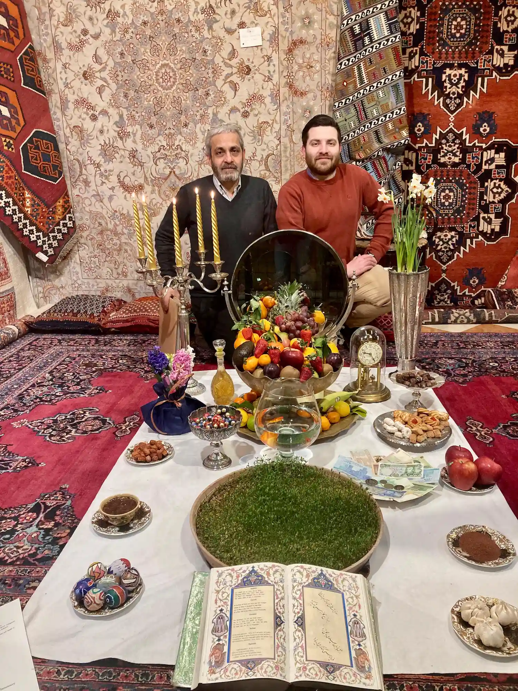
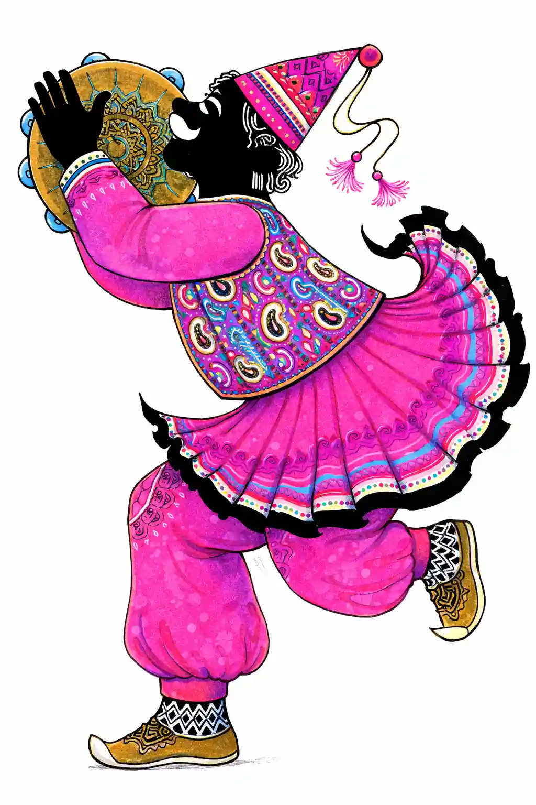
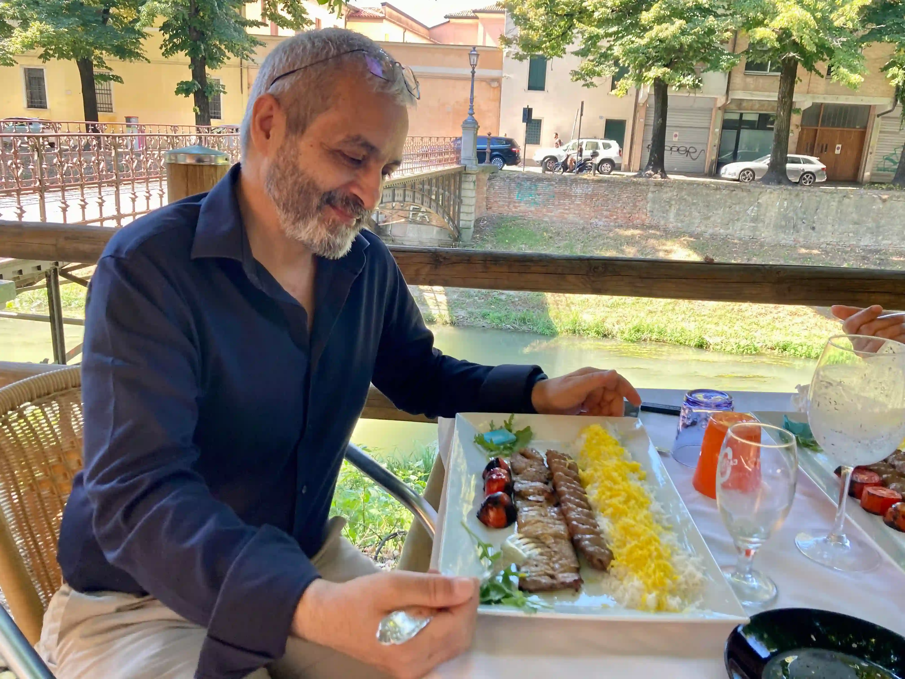

Culture
Nowruz
Nowruz, meaning "new day", is the Persian New Year and coincides with 21 March, the first day of spring.
This festive season, the happiest of the year, is comparable to our Christmas holidays: work slows down and schools close.
In the days before the New Year, the whole family is busy carefully cleaning the house: every corner is put in order, silver vases are polished and carpets are refreshed in preparation for visits.
When the new year finally begins, family members gather in new clothes around the Haft-Sin table and exchange good wishes.
The ritual of the "Haft-Sin" ("Haft" means "seven", and "Sin" is the name of the letter "s" in Farsi) consists of laying a white cloth on which seven elements are placed, each beginning with the Persian letter Sin: "S". Each object in its own way represents the triumph of good over evil, or life over death.
Haft-Sin
- Sabzeh - Sprouts
- Sonbol - Hyacinth
- Samanu - Sweet pudding
- Sir - Garlic
- Senjed - Dried fruit
- Somagh - Spice
- Serkeh - Vinegar
The Haft-Sin is then completed with
- Money and coins - Symbol of wealth and prosperity
- Clock - Symbol of the passing of time
- Coloured eggs - Symbol of birth
- Fish - Symbol of life and movement
- Mirror - Symbol of purity
- Candles - Symbol of warmth and fire
- Apple - The forbidden fruit
- Fruit and sweets

The oldest members of the family distribute the "Eidi" to the younger ones: a gift of new banknotes or gold coins.
A generous New Year lunch follows, rich and abundant like a Western festive dinner. The typical dish is "Sabzi polo e mahi", rice with herbs and white salmon from the Caspian Sea.
The Nowruz period begins with New Year's Day and lasts for thirteen festive days characterised by a lively exchange of visits among relatives known as "Did o Bazdid". Once again, family unity is at the centre, older people are honoured, and the occasion is often used to reconcile and leave old grudges behind.
On the thirteenth day, the "bad omen" of the number thirteen is warded off with an outing called "Sizdah-Bedar". Families bring with them the sprouted greens from the Haft-Sin and return them to nature as a sign of respect for the cycle of life.
Among the oldest and most symbolic popular traditions we remember
Haji Firouz

Tradition says he was a man dressed in red who went through the streets singing and playing the drum to greet the new year and tell people that spring had arrived; in return for the happy news, people gave him food or coins.
Just as in the past, Haji Firouz figures still appear in the streets today, rather like the pipers who fill our streets at Christmas time.
The official Haji Firouz costume is a bright red tunic, a pointed hat and a face painted black; they shake the Daf, a tambourine with jingles, while singing ancient verses of good fortune.
Persians are also very fond of the festival of Chaharshambe Suri, which takes place on the evening before the last Wednesday of the year and recalls the ancient Zoroastrian fire cult: bonfires are lit and everyone jumps through the flames while reciting a verse in which the fire gives its red colour to the jumper, absorbing negativity, while the jumper leaves behind yellow, which in Persian custom symbolises illness and weakness, and receives health and energy in exchange.
On the same evening, children and teenagers go from house to house hiding their faces and bodies with sheets so they cannot be recognised, and striking metal bowls with spoons. They stop at each door until someone opens and gives them sweets, dried fruit or other small gifts, playfully trying to make the sheets fall to discover who the "disturbers" are.
Persian cuisine

Persian gastronomy is renowned for its sophisticated combinations of flavours. Dishes based on meat and rice, delicately seasoned with spices, are easily appreciated even by the most demanding palates.
The national dish, Chelo Kabab, is the most popular: a tray of steamed rice and grilled meat, served with tomatoes and light yoghurt. The national drink, Dough, is made with yoghurt diluted with still or sparkling water and flavoured with salt and spices.
Worth noting is the care Persians traditionally devote to healthy food: throughout the day fruit is favoured and offered to guests together with sweets and tea. Their proverbial hospitality and festive warmth have few equals in the world and can surprise Western visitors who are not used to such customs.
Religion
The official religion in Iran is Islam, whose main branch is Shia Islam, but other religious minorities are present as well, such as Christianity, with more than 100,000 residents in Iran. The Christian minority is represented in parliament by two members with the same rights and duties as other citizens.
The Christian community is made up of Assyrians and Armenians, who have their own educational centres, newspapers in their own language and more than fifty places of worship and prayer.
The presence of these populations in Iran goes back more than three thousand years; in fact, the oldest church in the world, dating to the 1st century AD, is located in Iran.
The second religious presence is the Jewish one, which with 35,000 believers is the third most practised faith in Iran. They have schools, synagogues, hospitals and centres for the elderly. The language spoken is Aramaic, and the Jewish community also has a representative in parliament.
We should also remember the Zoroastrians, whose religion was the principal faith of Persia before Islam.
In conclusion, it is worth recalling that two articles of the Iranian constitution guarantee the right of religious minorities to profess their own faith.
Useful Persian words
A few useful words in case you find yourself in Iran
- yes/no - bale/na
- thanks - mersi (tashakor)
- hello - salam
- good morning - ruz bekheir
- good afternoon - asr bekheir
- good evening - shab bekheir
- good/bad - khub/bad
- day/week - ruz/hafteh
- month/year - mah/sal
- today/yesterday - em ruz/diruz
- greetings - mobarak
- carpet - farsh
- flight - parvaz
- airport - forudgah
- suitcase - chamedan
- hungry - gorosneh
- open/closed - baz/baste
- what's your name? - esme shoma chi ast?
- how are you? - hale shoma khubeh?
- what time is it? - saat chandeh?
- excuse me - bebakhshid
- money - pul
- lunch/dinner - nahar/sham
- breakfast - sobhaneh
- cold/hot - sard/garm
- rice - polo (celo)
- bread/water - nan/ab
- chicken - morgh
- egg - tokhmemorgh
- meat/fish - gusht/mahi
- yoghurt - mast
- cheese - panir
- butter/milk - kareh/shir
- sugar/salt - shekar/namak
- tomato - gojeh
- potatoes/onion - sibzamini/piaz
- carrot/cucumber - havij/khiar
- salad - kahu
- fruit - miveh
- apple/grape - sib/angur
- orange/banana - porteghal/moz
- melon - talebi/kharbuzeh
- sweet/tea - shirini/chai
- watermelon - hendavaneh
Days of the week
- Saturday - shanbeh
- Sunday - yek shanbeh
- Monday - do shanbeh
- Tuesday - se shanbeh
- Wednesday - chahar shanbeh
- Thursday - panj shanbeh
- Friday - jomeh
Numbers
- 1 - yek
- 2 - do
- 3 - se
- 4 - chahar
- 5 - panj
- 6 - shish
- 7 - haft
- 8 - hasht
- 9 - noh
- 10 - dah
- 11 - yazdah
- 12 - davazdah
- 13 - sizdah
- 14 - chardah
- 15 - panzdah
- 16 - shanzdah
- 17 - hevdah
- 18 - hijdah
- 19 - nozdah
- 20 - bist
- 30 - si
- 40 - chehel
- 50 - panjah
- 60 - shast
- 70 - haftad
- 80 - hashtad
- 90 - navad
- 100 - sad
- 200 - divist
- 1000 - hezar
Colours
- white - sefid
- black - siah
- blue - abi
- yellow - zard
- green - sabz
- red - ghermez
- orange - narangi
- pink - surati
- violet - banafsh